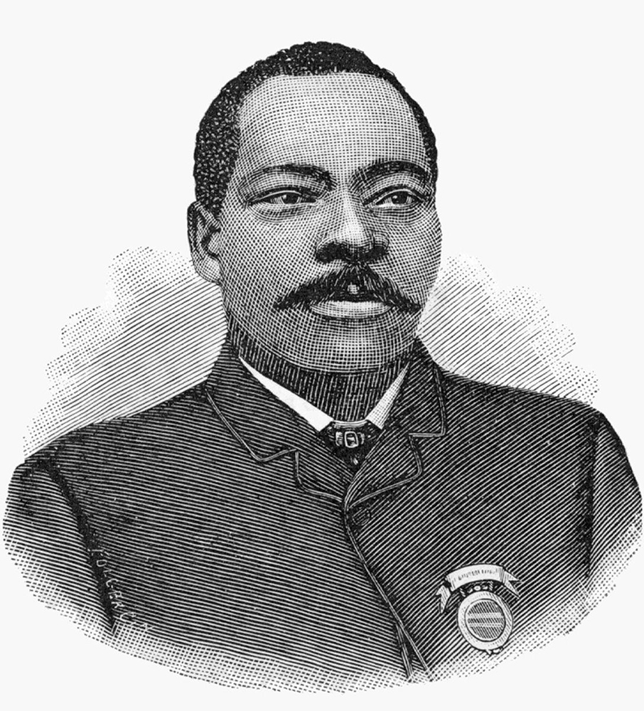
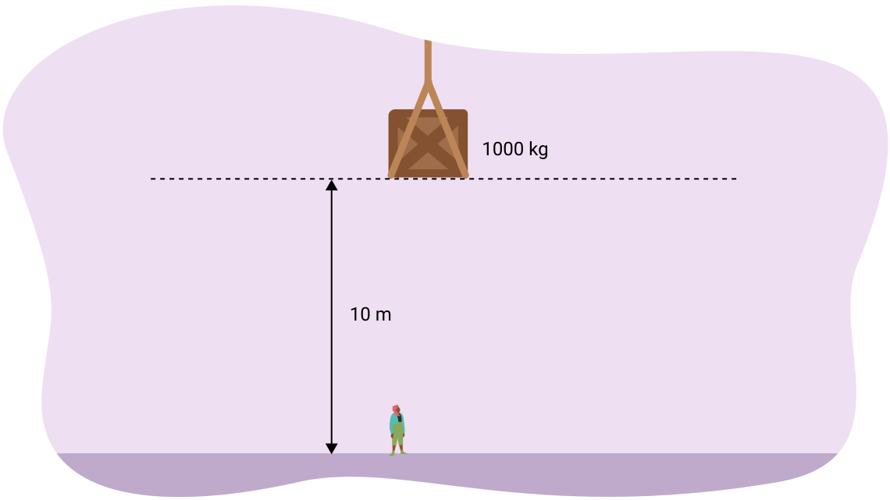
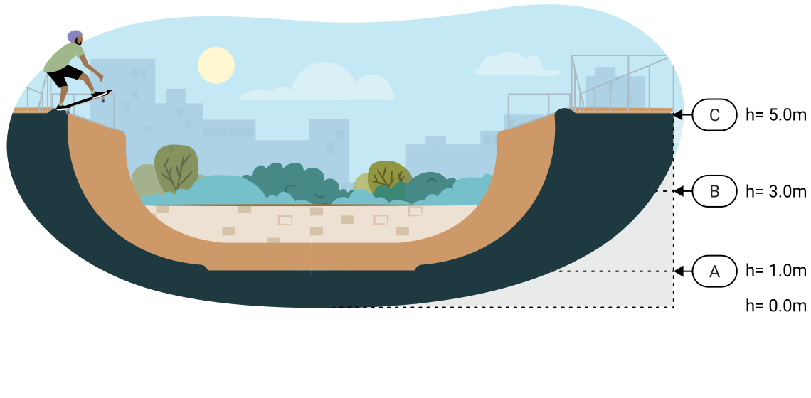
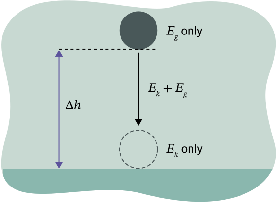
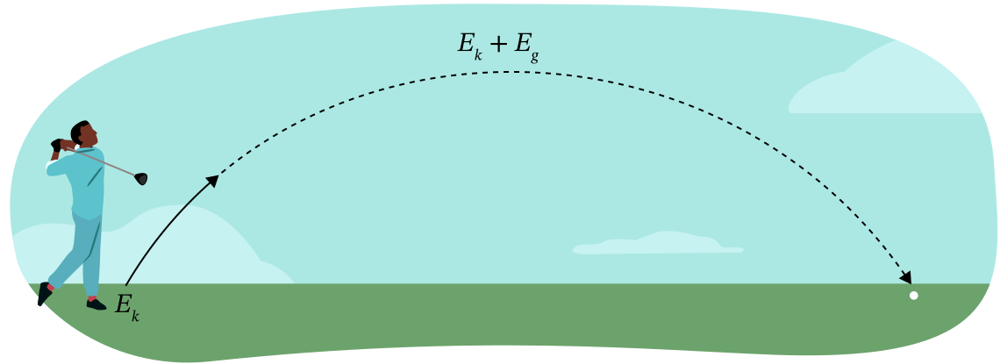
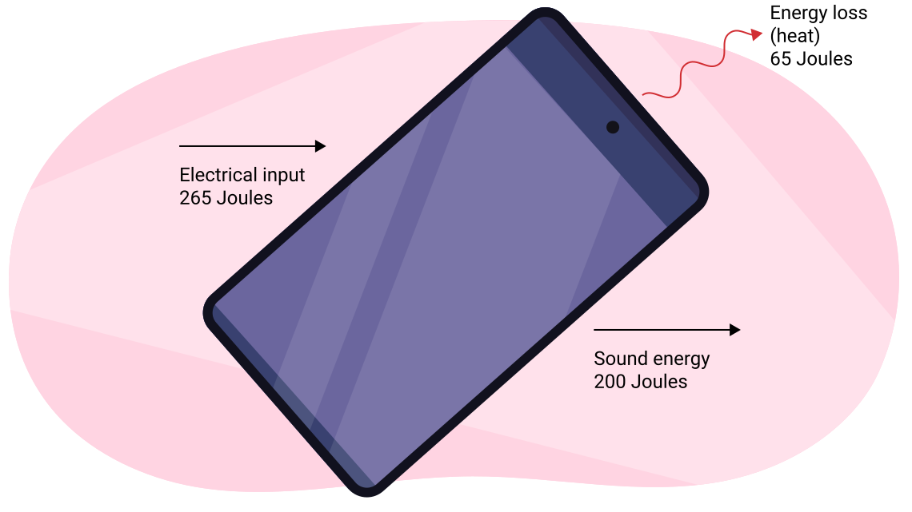

에너지 변환(energy transformation)
마지막으로 경사면을 올라가거나 내려갔던 때를 생각해 보세요. 예를 들어 언덕을 올라갈 때, 여러분은 아마 모르는 사이에 가지고 있는 에너지(energy)의 유형이 변화하고 있었습니다.
노트
여러분은 이전에 에너지 변환과 에너지 변환 방정식에 대해 배웠습니다. 배운 내용을 활용하여, 마찰과 공기 저항을 무시하고 다음 상황에 대한 에너지 변환 방정식을 기록하세요:
1. 위로 던진 공이 높이 올라갈수록 느려집니다.
운동 에너지(kinetic energy) → 중력 퍼텐셜 에너지(gravitational potential energy)
2. 눈 덮인 언덕 꼭대기에서 썰매를 탄 학생이 언덕을 내려갑니다.
중력 퍼텐셜 에너지 → 운동 에너지
이 학습 활동에서 여러분은 에너지 변환을 식별해야 합니다.

우리 중 많은 사람이 영화나 놀이공원에서 롤러코스터를 본 적이 있습니다. 철도 시스템을 만드는 데 사용된 것과 동일한 기술이 최초의 안전한 롤러코스터에 사용되었다는 것을 알고 계셨나요? Granville Woods는 Coney Island에서 최초의 8자 모양 롤러코스터를 시험했습니다.
직접 해보기!
원하는 검색 엔진을 사용하여 "the mechanical universe"와 "design a roller coaster"를 검색한 후, 시뮬레이션 웹사이트인 Amusement Park Physics — Design a Roller Coaster 페이지를 방문하여 여러분만의 롤러코스터를 설계해 보세요.
여러분의 창의력(그리고 물리학 지식)을 활용하여 자신만의 놀이공원 놀이기구를 설계하게 됩니다. 롤러코스터를 좋아하든 아니든, 누구나 이 활동을 시도할 수 있습니다.
완료하면, 시뮬레이션이 여러분의 롤러코스터를 두 가지 측면에서 평가합니다:
- 안전성
- 재미 (오락성)
이 학습 활동의 뒷부분에서 성공적인 롤러코스터 설계의 구성 요소에 대해 더 배우게 됩니다.

도입
Thomas Edison은 미래를 내다보는 능력, 발명 정신, 그리고 효율에 대한 열정으로 유명했습니다. 1931년 세상을 떠나기 직전, 그는 다음과 같은 말을 남겼으며, 이 말은 이후 New York Times에 실렸습니다.
나는 태양과 태양 에너지에 돈을 걸겠다. 정말 대단한 에너지원이다! 석유와 석탄이 고갈될 때까지 기다리지 않고 이를 해결하기 시작하길 바란다.
Thomas Edison (1847–1931)
에너지 효율적이라는 것은 무엇을 의미할까요? 에너지를 보존한다는 것은 무엇을 의미할까요? 에너지는 어디서 오며 에너지의 종류가 하나 이상일까요? 이 수업에서 여러분은 화학 에너지(chemical energy)와 역학적 에너지(mechanical energy)가 가정과 직장에서 매일 사용하는 전기 에너지(electrical energy)로 어떻게 변환되는지 배우게 됩니다.
태양: 궁극적인 에너지원
우리의 주요 에너지원은 태양이지만, 우리가 사용하는 대부분의 에너지는 사용하기 전에 여러 번 변환됩니다. 에너지는 다양한 형태로 존재하며 한 유형에서 다른 유형으로 쉽게 변환됩니다. 에너지는 생성되거나 파괴될 수 없지만, 저장되어 나중에 사용될 수 있습니다. 에너지가 형태를 바꿀 때, 일부는 항상 열에너지(thermal energy)로 변환되어 주변 환경으로 분산됩니다.
하루 동안 여러분이 하는 모든 것은 에너지를 한 형태에서 다른 형태로 변환하는 것과 관련됩니다. 컴퓨터에서 뉴스를 확인하든, 퇴근 후 집에 돌아오든, 집안일을 하든, 여러분은 에너지를 사용하고 다른 형태로 변환하고 있습니다.
우리 몸은 음식에 저장된 화학 에너지를 지속적으로 열에너지와 운동 에너지로 변환합니다. 이 과정을 세포 호흡(cellular respiration)이라 하며, 이것이 우리를 살아 있게 합니다. 식단과 신체 건강이 우리 몸이 이 변환을 얼마나 효율적으로 수행할 수 있는지를 결정합니다. 균형 잡힌 식단과 규칙적인 활동이 중요합니다.
중력 퍼텐셜 에너지 계산
건설 현장 견학에서, 여러분은 크레인이 1000 kg의 하중을 옆의 그림과 같이 10 m 높이로 들어 올리는 것을 관찰합니다. 이것은 얼마나 많은 에너지가 필요했을까요?

필요한 에너지는 수행된 일(work)과 같으며, 물체가 수직으로 들어 올려지므로 힘(force)은 중력(gravity)과 같습니다.
그 철강 하중 바로 아래에 서 있으시겠습니까? 아마 아닐 것입니다! 중력과 여러분 위에 있는 하중의 위치 때문에, 그 철강 하중에는 많은 에너지(9.8 × 104 J)가 저장되어 있습니다. 케이블이 끊어지면 그 모든 에너지가 여러분에게 전달될 가능성이 항상 있습니다.
하중을 들어 올리는 데 수행된 일은 현재 중력 퍼텐셜 에너지로 하중에 저장되어 있습니다. 이것은 기호 ΔEg로 표시합니다.
공식
중력 퍼텐셜 에너지 = ΔEg
여기서:
는 두 지점 사이의 중력 퍼텐셜 에너지의 차이입니다.
은 물체의 질량(mass)입니다.
는 중력 가속도(acceleration due to gravity)입니다.
는 두 지점 사이의 높이 차이입니다.
이 방정식은 때때로 다음과 같이 쓸 수도 있습니다:
참고: 에너지에는 항상 줄(J) 단위를, 질량에는 킬로그램(kg)을, 높이에는 미터(m)를 사용하세요.
예시: 중력 퍼텐셜 에너지의 변화
롤러코스터에서 24 m 높이의 언덕을 올라가는 420 kg 자동차의 중력 퍼텐셜 에너지 변화를 계산하세요.
중력 퍼텐셜 에너지의 변화
물체가 더 낮은 위치로 이동하면 중력 퍼텐셜 에너지는 어떻게 될까요?
물체가 낮아지면 중력 퍼텐셜 에너지를 잃습니다.
물체가 떨어지면 중력 퍼텐셜 에너지를 잃으므로, 중력 퍼텐셜 에너지의 변화는 음수입니다.
예시
45 g의 골프공이 그린의 컵에 떨어집니다. 이 공은 -5.3 × 10-3 J의 중력 퍼텐셜 에너지 변화를 경험합니다. 얼마나 떨어졌을까요?
주어진 값:
미지수:
방정식:
풀이:
결론:
공은 0.012 m, 즉 1.2 cm 떨어졌습니다.
운동 에너지
하키 퍽이 스틱을 떠날 때 얼마나 많은 에너지를 가지고 있을까요? 하키 스틱은 퍽에 일정 거리에 걸쳐 힘을 가했으므로, 퍽에 일이 수행되었습니다. 퍽의 에너지는 운동 에너지 , 즉 운동의 에너지 형태로 증가했습니다. 하키 퍽은 처음에 정지해 있었으므로, 동작이 시작될 때 운동 에너지를 가지고 있지 않았습니다.
하키 스틱이 수행한 모든 일은 운동 에너지가 되었습니다. 하키 스틱을 떠날 때 퍽의 운동 에너지는 운동 에너지의 일반 공식을 사용하여 구할 수 있습니다:
공식
운동 에너지:
여기서 m은 질량(kg 단위)이고 v는 속력(speed)(m/s 단위)입니다.
예시: 운동 에너지
예시 1: 속도 36.0 km/h [전방]로 움직이는 7.0 kg 포환(shot put)의 운동 에너지를 계산하세요. 선수가 포환에 그 속도를 주기 위해 얼마나 많은 일을 했을까요? (일은 에너지의 변화와 같으므로, 운동 에너지의 변화를 구하면 수행된 일을 구하는 것임을 기억하세요.)
주어진 값:
(방정식에서는 속도가 아닌 속력을 사용하므로, 방향은 필요하지 않습니다.)
미지수:
방정식:
풀이:
결론:
포환의 운동 에너지는 350 J입니다.
일은 에너지의 변화와 같으므로, 선수는 포환에 350 J의 일을 수행한 것입니다.
예시 2: 450 kg 자동차가 9.2 × J의 운동 에너지를 가지고 있을 때, 얼마나 빠르게 달리고 있을까요?
주어진 값:
미지수:
방정식:
풀이:
결론:
자동차는 2.0×101 m/s로 달리고 있습니다.
에너지 보존 법칙
정의
에너지 보존 법칙
에너지는 파괴되거나 소멸될 수 없으며, 단지 한 형태에서 다른 형태로 변환될 뿐입니다.
물리학자들은 종종 보존(conserve)이라는 용어를 시스템 내 총 에너지가 일정하다는 의미로 사용합니다. 롤러코스터가 트랙을 통과할 때 중력 퍼텐셜 에너지와 운동 에너지의 양은 변하지만, 총 에너지는 일정하게 유지됩니다.
여러분은 다양한 형태의 에너지에 대해 배웠습니다. 이제 역학적 에너지의 개념을 배울 것입니다. 역학적 에너지는 물체의 운동 에너지와 중력 퍼텐셜 에너지의 합입니다.
다시 말해, 물체의 역학적 에너지는 물체의 운동 에너지와 퍼텐셜 에너지의 합과 같습니다:
공식
역학적 에너지
따라서, 중력 외에 다른 외력이 작용하지 않는다면, 과정 전체에 걸쳐 일정하게 유지되는 것은 총 역학적 에너지입니다.
노트
다음 스케이트보드 경사로 그림을 연구하고, 노트에 다음 질문에 답하세요. 여러분의 풀이를 예시 답안과 비교하여 이해도를 확인하세요.
1. 스케이트보더가 정지 상태에서 C 지점에서 출발하면, 경사로를 내려갈 때 속력이 증가하고 높이가 감소합니다. 운동 에너지가 가장 큰 곳은 어디일까요?

A 지점에서입니다. 가장 낮은 지점에 있을 때 Eg가 가장 낮고 EK가 가장 높기 때문입니다.
2. 스케이트보더의 질량이 55 kg이라고 가정하고, 다음 표를 채우세요. 높이는 알지만 속력은 모르기 때문에 약간 까다롭습니다. 표를 채우는 데 필요한 만큼 힌트를 사용하세요.
힌트:
| A 지점 | B 지점 | C 지점 | |
|---|---|---|---|
| 2156 J | 1078 J | 0 J | |
| 8.85 m/s | 6.26 m/s | 0 m/s | |
| 539 J | 1617 J | 2695 J | |
| 2695 J | 2695 J | 2695 J |
3. 와 사이의 관계는 무엇인가요?
중력 퍼텐셜 에너지가 감소하면(물체가 낮아지면), 운동 에너지가 증가합니다(물체의 속력이 증가합니다).
예시: 떨어뜨린 물체
질량이 430 g인 돌을 옆의 그림과 같이 지면에서 1.7 m 높이로 들어 올립니다.
돌을 놓으면, 아래로 이동하면서 중력 퍼텐셜 에너지는 감소하고 운동 에너지는 증가합니다.
돌을 놓았을 때 모든 중력 퍼텐셜 에너지가 운동 에너지로 변환된다면, 돌이 지면에 닿기 직전에 얼마나 빠르게 움직이고 있을까요?

주어진 값:
미지수:
방정식:
풀이:
먼저, 중력 퍼텐셜 에너지의 양을 구해야 합니다. 그런 다음, 모든 에너지가 운동 에너지로 변환되므로, 동일한 에너지 양에 해당하는 속력을 구할 것입니다.
따라서,
결론:
돌은 지면에 닿기 직전에 5.8 m/s로 움직이고 있습니다.
흥미롭게도, 이 문제에서 질량은 실제로 필요하지 않았습니다. 초기 속력이 0이고, 중력 가속도와 변위가 주어졌다는 점을 이용하여 운동학(kinematics)으로도 풀 수 있었을 것입니다. 같은 답을 얻었을 것입니다. 운동학과 에너지 보존 사이에는 깊은 관련이 있습니다.
예시: 포물선 궤적으로 던진 공
질량이 145 g인 골프공이 쳐서 처음에 52.0 m/s의 속력으로 날아가며, 다음 그림과 같이 골프 코스를 따라 호를 그리며 비행합니다. 호의 꼭대기에서 속력은 48.0 m/s입니다. 골프공 호의 최대 높이는 얼마일까요?

골프공이 지면에 있을 때 높이는 0이므로 중력 퍼텐셜 에너지는 0입니다. 공이 호의 꼭대기에 있을 때는 속력과 높이가 모두 있으므로 중력 퍼텐셜 에너지와 운동 에너지를 모두 가지고 있습니다.
주어진 값:
미지수:
방정식:
풀이:
지면 위의 공
공이 지면에 있을 때:
호의 꼭대기
호의 꼭대기에서, 에너지 보존으로 인해 역학적 에너지는 여전히 196 J입니다.
결론:
공의 최대 높이는 20.4 m입니다.
백분율 효율(percent efficiency)
에너지 변환이 일어날 때, 일부 에너지는 항상 열에너지로 변환되며, 이는 종종 분산되어 일을 수행하는 시스템이나 기계가 다시 회수할 수 없게 됩니다. 예를 들어, 휴대전화나 노트북을 사용할 때 약간 따뜻해지는 것을 느낄 수 있습니다. 배터리의 화학 에너지 일부가 열로 변환된 후 손실됩니다.
시스템이나 기계에서 실제로 일로 변환되는 에너지의 양을 유용한 일 또는 에너지 출력이라고 합니다. 시스템이나 기계에 실제로 투입된 에너지를 실제 수행된 일 또는 에너지 입력이라고 합니다. 이 두 양을 비교하면 시스템이나 기계의 효율을 알 수 있습니다.
공식
효율
현실 세계에서의 에너지 변환의 경우, 효율은 100%보다 작아야 합니다. 만약 100%보다 큰 답을 얻었다면, 입력과 출력에 올바른 값을 사용했는지 확인하고 이전 계산을 다시 점검하세요.
다음 표는 몇 가지 일반적인 시스템의 백분율 효율을 보여줍니다.
| 시스템 | 효율 |
|---|---|
| 전기 가열 패드 | 99% |
| 가정용 가스 보일러 | 85% |
| 가정용 석유 보일러 | 66% |
| 자동차 엔진 | 26% |
| LED 램프 | 44% |
| 백열 램프 | 2% |
에너지 변환이 항상 해당 시스템에서 일을 할 수 있는 형태의 에너지로 귀결되는 것은 아닙니다. 예를 들어, 내연 기관 자동차 엔진은 연료의 화학 에너지를 100% 자동차 추진에 변환하지 않습니다. 에너지 일부는 엔진 부품을 움직이는 데 사용되고, 절반 이상은 열에너지로 변환되며, 나머지 20%만 자동차의 구동계에 사용됩니다. 전기 자동차는 전력망의 에너지를 바퀴의 역학적(운동) 에너지로 변환하는 데 훨씬 더 효율적입니다(60% 변환 효율). 전기 자동차는 제동을 통해 일부 운동 에너지를 배터리의 화학 에너지로 다시 변환할 수 있다는 이점이 있습니다. 또한 공회전 시에는 전기 에너지가 소비되지 않습니다.
구형 형광등과 백열등이 왜 그렇게 비효율적일까요? 전기 에너지가 가시광선 에너지로 변환될 때, 둘 다 빛 에너지로 방출하는 것보다 훨씬 더 많은 양의 열에너지를 부산물로 생성합니다.
예시: 효율
다음 그림과 같이 265 J의 에너지를 사용하여 200.0 J의 소리 에너지(sound energy)를 생산하는 태블릿 컴퓨터의 백분율 효율을 계산하세요.

주어진 값:
입력: 265 J의 전기 에너지
출력:
의 소리 에너지.
미지수:
% 효율
방정식:
풀이:
결론:
태블릿 컴퓨터의 에너지 효율은 75.5%입니다. 시스템에 투입된 전기 에너지의 75.5%를 소리 에너지로 변환합니다.
나머지 에너지(24.5%)는 열에너지(열)로 손실됩니다.
발전 방법
많은 전기 장치들이 효율이 높지 않아 많은 에너지를 소비한다는 것을 알았습니다. 이러한 장치들을 작동시키는 데 필요한 에너지는 어디서 얻을까요?
일부는 배터리에 저장된 화학 퍼텐셜 에너지에서 나옵니다. 하지만 대량의 전기 소비를 위해서는 발전소에 의존합니다.
에너지를 전기 에너지로 변환하는 방법은 여러 가지가 있습니다.

노트
다양한 전력 생산 방법에 대해 배웠으니, 이제 그 방법들을 비교해 봅시다.
조사를 하지 않고, 몇 가지 발전 유형의 이름을 말해 보세요:
1. 재생 가능한 발전 방법
태양광, 풍력(터빈), 수력(수력 발전), 바이오매스, 지열, 조력
2. 재생 불가능한 발전 방법
석탄, 원자력, 석유, 천연가스.
정보를 갖춘 시민이 되기
여러분이 알았듯이, 우리 사회는 전기에 크게 의존합니다. 이 학습 활동에서 다양한 발전 방법에 대해 배운 후, 두 가지 재생 에너지원과 두 가지 비재생 에너지원을 조사해 보세요.
노트
노트에 다음 T-차트 그래픽 조직자를 만들고, 두 가지 재생 에너지원과 비재생 에너지원의 장점과 단점을 나열하세요.
| 발전 방법 | |
| 장점 | 단점 |
자기 점검 퀴즈
이해도를 확인하세요!
다음 자기 점검 퀴즈를 완료하여 학습 진행 상황과 집중해야 할 영역을 파악하세요.
이 퀴즈는 피드백 용도로만 사용되며, 성적에 반영되지 않습니다. 이 퀴즈에 대한 시도 횟수는 무제한입니다. 시간을 갖고, 최선을 다하며, 제공된 피드백을 반영하세요.
퀴즈를 눌러 이 도구에 접근하세요.